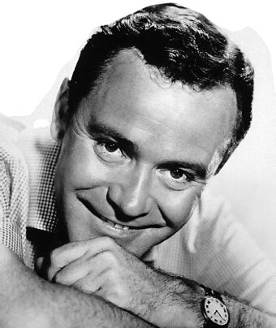

 John Uhler Lemmon III (Newton, Massachusetts, 8 de febrero de 1925-Los Ángeles, California, 27 de junio de 2001), más conocido como Jack Lemmon, fue un actor estadounidense. Resaltó sobre todo por sus películas con Billy Wilder. Ganó dos Premios Óscar de ocho nominaciones: el primero en 1955, por la película Escala en Hawaii, como mejor actor de reparto, y el segundo, en 1974, por Salvad al tigre, como mejor actor.1 Es considerado como uno de los actores más respetados y aclamados de su generación. Así como uno de los actores más populares del Cine clásico de Hollywood. Durante carrera actoral le llevó personificar papeles de diferentes géneros, especialmente el drama y comedia.